A propos de moi
Quelques mots à mon sujet
BIO
Passionné par les mathématiques, la physique et autres sciences exactes, ma curiosité m'a amené à m'intéresser plus en profondeur aux nouvelles technologies, en particulier dans le domaine de la programmation.
Le code a ceci de fascinant qu'il permet de donner vie à des projets très variés, laissant libre court à la créativité et l'originalité.
C'est tout logiquement que je me suis formé au métier de développeur web à l'école O'clock au deuixème semestre de l'année 2019, qui m'a permis d'acquérir des bases solides en programmation notamment des langages PHP et javaScript. Depuis, je suis un développeur web à la recherche de projets qui me permettront de m'épanouir professionnellement et d'exploiter mes connaissances dans des défis enrichissants et inspirants.
N'hésitez pas à me contacter pour toute offre de développement web et mobile.
Parcours
De chimiste à développeur web
Dès mon plus jeune âge et tout au long de mon parcours scolaire, j'ai toujours porté un intérêt privilégié pour les sciences. N'étant pas très à l'aise avec les maths ni avec l'outil informatique, je me suis tout logiquement orienté vers les sciences naturelles.
Je me suis donc lancé dans des études en pharmacie et en sciences chimiques et biologiques à l'UPEC. Mais je ne suis jamais parvenu à me projeter vers un métier dans ce domaine, ce qui a entraîné chez moi une baisse de motivation.
Ne sachant trop vers quel métier me destiner, j'ai connu plusieurs expériences relativement courtes dans la restauration, la grande distribution et le commerce.
Mais c'est une expérience dans l'enseignement, en tant qu'assistant pédagogique puis professeur remplaçant de mathématiques en lycée, que je me suis découvert à ma grande surprise une passion pour les mathématiques et les sciences exactes. Cela m'a poussé à approndir mes connaissances, notamment en m'initiant à la programmation, qui m'a immédiatement donné envie d'en savoir plus.
J'ai donc suivi des cours d'initiation en Python, puis en développement web. Le développement web étant un secteur extrêmement dynamique avec de belles perspectives en matière d'emploi, je me suis fixé comme objectif de devenir développeur. J'ai donc suivi une formation intensive de 5 mois qui m'ont permis de faire un premier pas important vers mon nouveau choix de carrière.
Depuis la fin de ma formation, je consacre quotidiennement plusieurs heures à consolider mes bases et à découvrir de nouveaux langages et frameworks afin d'être le plus performant possible lors de mes futures missions.
Dès mon plus jeune âge et tout au long de mon parcours scolaire, j'ai toujours porté un intérêt privilégié pour les sciences. N'étant pas très à l'aise avec les maths ni avec l'outil informatique, je me suis tout logiquement orienté vers les sciences naturelles.
Je me suis donc lancé dans des études en pharmacie et en sciences chimiques et biologiques à l'UPEC. Mais je ne suis jamais parvenu à me projeter vers un métier dans ce domaine, ce qui a entraîné chez moi une baisse de motivation.
Ne sachant trop vers quel métier me destiner, j'ai connu plusieurs expériences relativement courtes dans la restauration, la grande distribution et le commerce.
Mais c'est une expérience dans l'enseignement, en tant qu'assistant pédagogique puis professeur remplaçant de mathématiques en lycée, que je me suis découvert à ma grande surprise une passion pour les mathématiques et les sciences exactes. Cela m'a poussé à approndir mes connaissances, notamment en m'initiant à la programmation, qui m'a immédiatement donné envie d'en savoir plus.
J'ai donc suivi des cours d'initiation en Python, puis en développement web. Le développement web étant un secteur extrêmement dynamique avec de belles perspectives en matière d'emploi, je me suis fixé comme objectif de devenir développeur. J'ai donc suivi une formation intensive de 5 mois qui m'ont permis de faire un premier pas important vers mon nouveau choix de carrière.
Depuis la fin de ma formation, je consacre quotidiennement plusieurs heures à consolider mes bases et à découvrir de nouveaux langages et frameworks afin d'être le plus performant possible lors de mes futures missions.
Formation
Ecole O'clock
- Le « Socle » de 3 mois apportant les bases du développement avec les technologies HTML5, CSS3, JavaScript, PHP et MySQL ;
-
La « Spécialisation » (1 mois, sur Wordpress) :
- découverte de WordPress, gestion du workflow en milieu professionnel avec Webpack, Composer et NPM) ;
- configuration de WordPress pour une installation personnalisée custom ;
- mise en place de Webpack pour compiler les fichiers afin de les regrouper en un seul ;
- notions avancées autour des thèmes et plugins (création de plugins simples, installation et définition d'autres tels ACF ou Simply Show hooks) ;
- principes avancés autour de WordPress et mise en production (REST API, déploiement etc).
- L'« Apothéose » (1 mois) : Projet de fin de formation permettant de mettre en pratique toutes les connaissances acquises pour l'élaboration d'un projet professionnel.
Technologies
 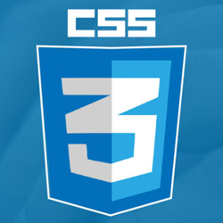
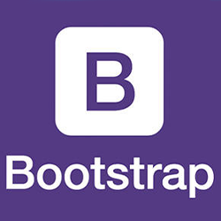
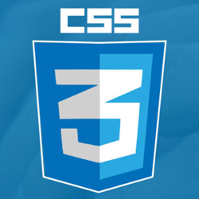
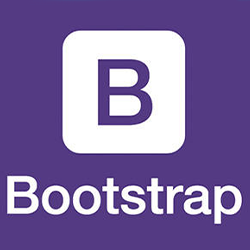
 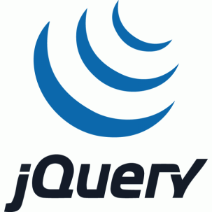
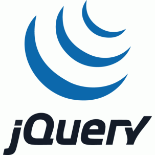

 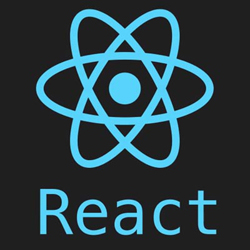
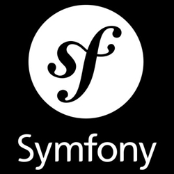
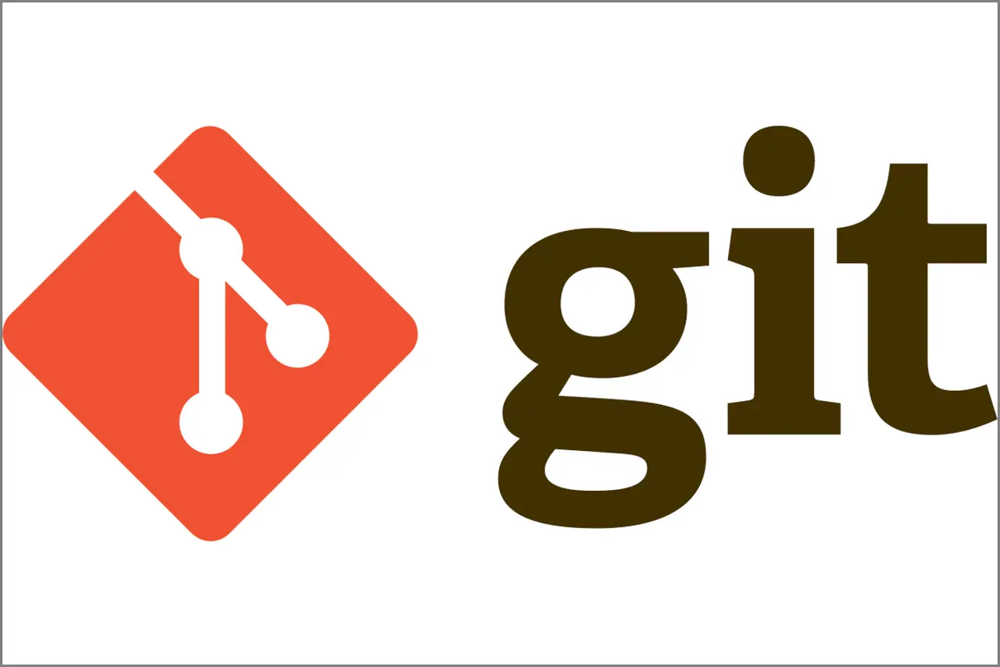
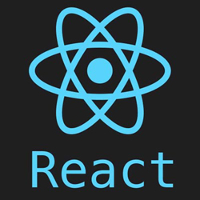
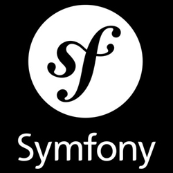
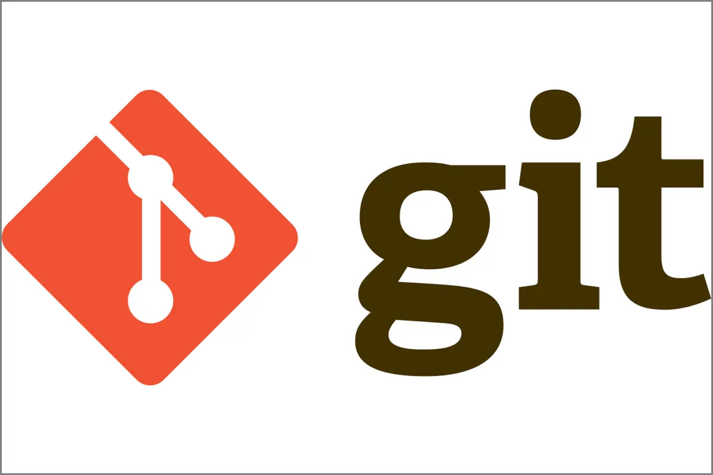